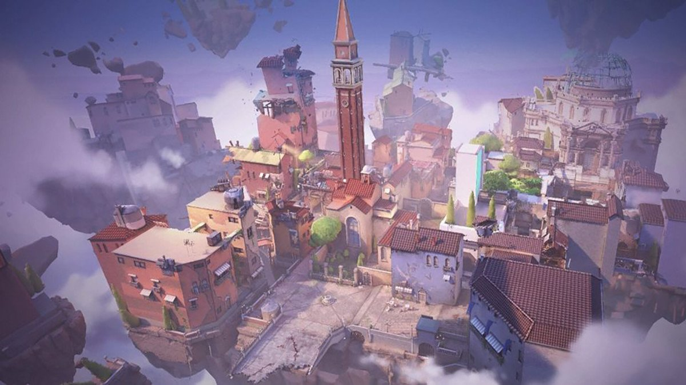
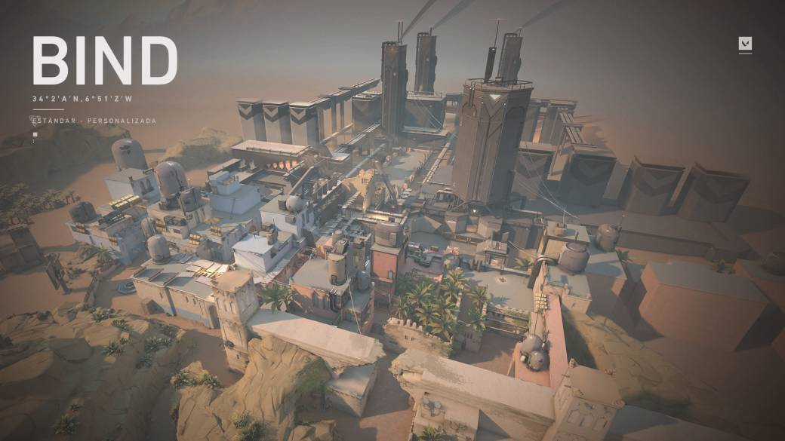
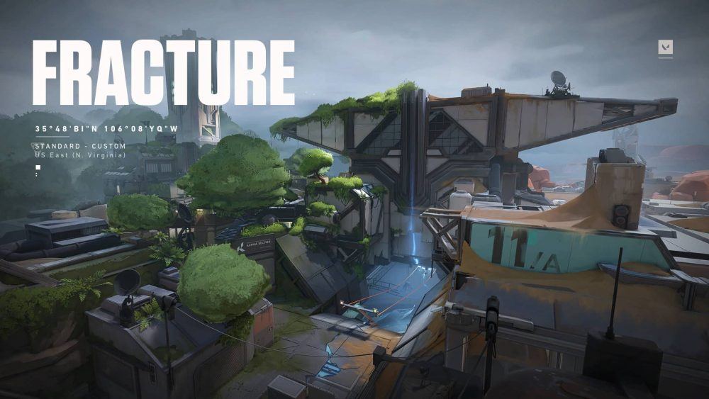
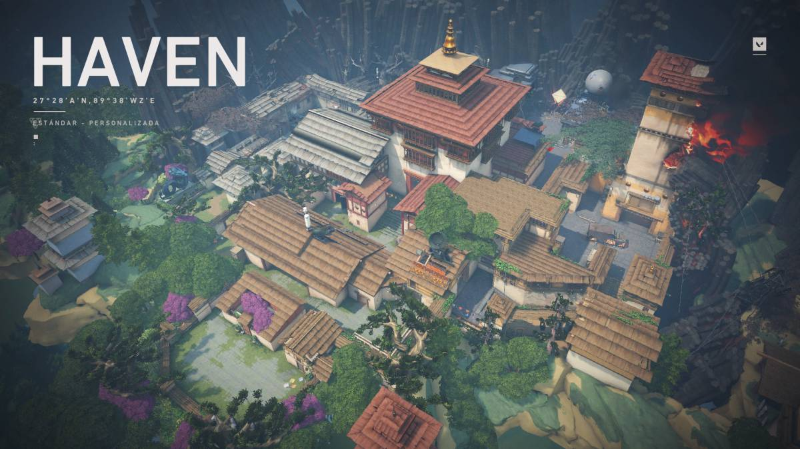
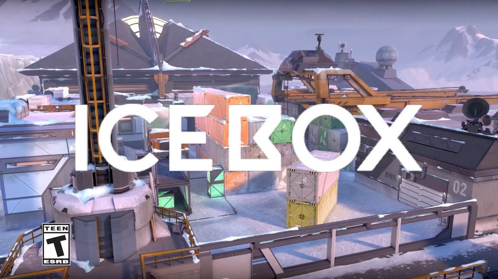

Mapas
Valorant cuenta con varios mapas en los que desarrollar la emoción de sus partidas por equipos. En el lanzamiento del juego hubo 4 mapas disponibles (Ascent, Bind, Haven y Split), aunque Riot Games planea ir ampliando la lista posteriormente. Actualmente el juego cuenta con 7 mapas jugables, siendo Fracture el mas reciente. Reconocer estos mapas y aprendérselos al dedillo es algo vital si queremos ganar nuestras partidas y tener la oportunidad de maniobrar y sacar provecho de las habilidades de los agentes. Todos los mapas de Valorant tienen varios términos en común, nos referimos a lo siguiente:
- Cada mapa cuenta con dos bases iniciales, la del equipo de atacantes y la del equipo de defensores.
- Hay puntos en los que encontraremos barreras límite durante la fase de compra.
- Todos los mapas tienen sus emplazamientos clave para poder plantar la SPIKE.
Ascent
Ascent es un mapa ambientado en Italia, más en concreto una ubicación que recuerda a la ciudad de Venecia. Aunque en este caso se trata de una ciudad flotante con canales y algo muy interesante; algunas paredes destructibles y puertas que se pueden abrir y cerrar. Este mapa dispone de tres caminos principales y una gran zona central abierta, desde la que se puede recorrer cuatro rutas de flanqueo hacia los emplazamientos A y B. Además Ascent es un mapa con cierta verticalidad, más pronunciada que en los demás.
Bind
Bind es un mapa ambientado en una ciudad de arquitectura árabe con varios pasillos y callejuelas, además de contar con las instalaciones de unos laboratorios y unos pocos puntos altos que dan ventaja de altura. Pero lo más interesante de este mapa es que es el único que posee dos portales de teletransporte unidireccional con los que movernos rápidamente entre ubicaciones. Debido a sus características, creemos que es un mapa muy favorecedor para el equipo de los defensores, y difícil para los atacantes, que solo tienen dos zonas para plantar la SPIKE. Precisamente los portales pueden hacer que los defensores pillen desprevenidos a los atacantes por la espalda, así que se recomienda estar muy atento al sonido que estos producen.
Breeze

Breeze es un paraíso tropical en medio del océano. Junto con las cuevas junto al mar y las ruinas históricas, la basura arrastrada a la orilla y los barcos varados forman la base de una pequeña civilización en la isla. El mapa es uno de los más grandes, si no el más grande, en Valorant hasta ahora y ofrece muchos ángulos para los jugadores del Operator, especialmente debido a las grandes distancias. La característica única de Breeze es una rampa que puede usar para ingresar rápidamente al área Mid. Aunque esta característica probablemente no tendrá un gran impacto en la forma en que se jugará el mapa, podría dar lugar a interpretaciones interesantes.
Fracture
"Una instalación de investigación ultrasecreta dividida por un experimento fallido con radianita. Con opciones de defensa tan divididas como el mapa, la elección es suya: encontrarse con los atacantes en su propio territorio o cerrar las escotillas para resistir el asalto". Fracture es un sitio experimental de alto secreto dividido por un desastre provocado por radianita. En su forma más simple, el mapa está marcado por su diseño en forma de H con una división visual en el medio que revela lados contrastantes. Las tirolinas largas también conectan rutas por debajo. Al igual que los mapas anteriores, esté atento a los vínculos importantes con la tradición de VALORANT, incluidos los objetos narrativos interactivos por primera vez.
Haven
Haven es uno de los mapas más grandes y complejos de Valorant. Está ambientado en un pueblo de estilo japonés medio destruido, con unas cuantas calles estrechas y plazas abiertas. Y es el único mapa que cuenta con 3 emplazamientos para plantar la SPIKE, lo que hace que sea difícil de defender y versátil de atacar. Por todo esto, la comunicación y el trabajo en equipo es esencial en Haven. A favor tenemos que las zonas clave están bastante cerca las unas de las otras, por lo que el desplazamiento se vuelve genuino y la acción frenética (sobre todo por algunos puntos ciegos importantes).
IceBox
Tu próximo campo de batalla es un sitio secreto de excavación del Reino conquistado por el Ártico. Los dos sitios de la planta protegidos por la nieve y el metal requieren cierta delicadeza horizontal. Aprovecha las tirolinas y nunca te verán venir. Icebox es el primer mapa que introduce tirolinas horizontales, visto en el sitio A. Cada sitio de Icebox es un complejo espacio de combate que cuenta con mucha cobertura y verticalidad. Este mapa enfatiza escaramuzas, puntería aguda y juego adaptativo. También es el primer mapa donde el sitio de plantar la spike tiene diferentes niveles de elevación. Ambos sitios contienen nidos en los que los jugadores pueden entrar usando cuerdas y luego plantar la spike en el piso del nido.
Split

Split puede resultar un mapa algo laberíntico de entrada, pero termina siendo fácil de entender, sobre todo si vienes de juegos como League of Legends ya que tiene 3 carriles principales, uno en el centro y dos a cada lado que llevan a los emplazamientos de la SPIKE. Este mapa está ambientado en los bajos fondos de una ciudad oriental con edificios modernos y de corte tradicional y cuenta con algunos pasajes subterráneos y muchas esquinas donde esconderse. Los defensores tienen una ligera ventaja frente a los atacantes ya que a estos les costará más transitar por los lugares y moverse de un lado a otro puede ser algo lento.